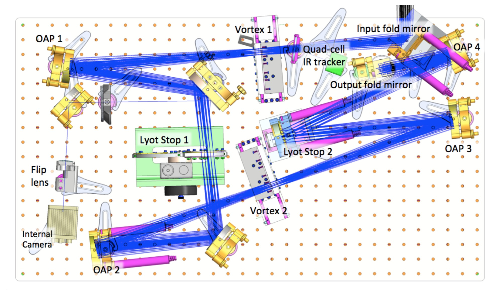
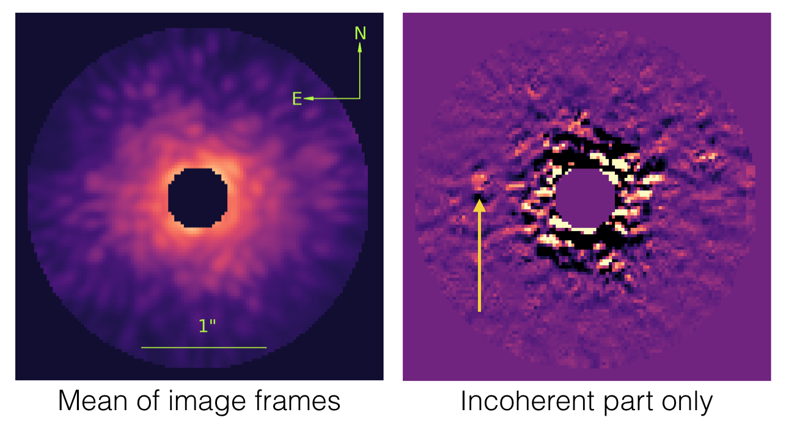
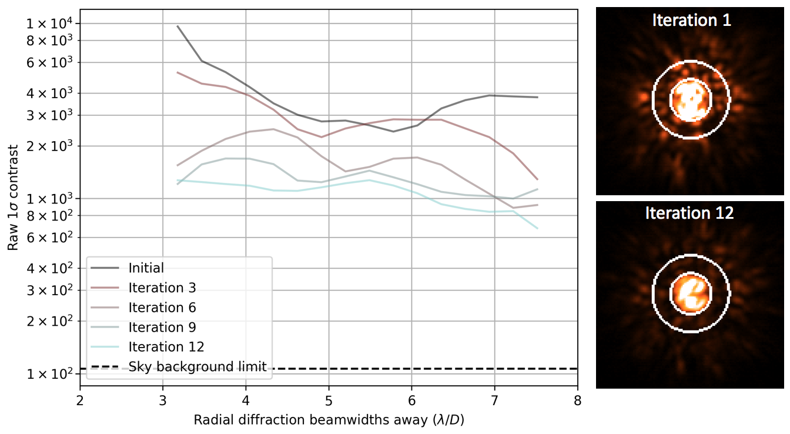
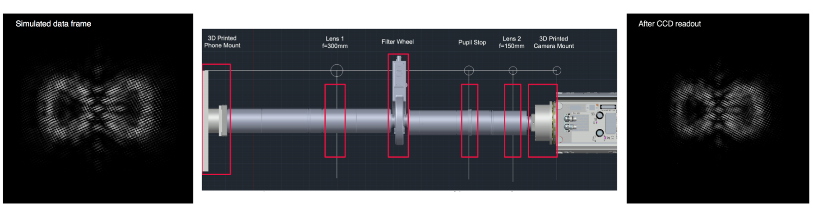

Research interests
My research is located at the intersection of astronomy, optics, and data analysis, working towards the goal of taking pictures of planets around other stars. For ground-based observing and instrument development, I primarily make use of the W.M. Keck Observatory in Hawaii and the legendary Palomar Observatory in California, but have also used NASA's Infrared Telescope Facility. In observatory development, I worked on designing and building the Minerva array on Mt. Hopkins in Arizona. My space-based efforts are towards developing the WFIRST coronagraph and Starshade mission. I also maintain an interest in post-processing and analysis of exoplanet imaging data.
Current ground-based projects
High-contrast imaging with the Stellar Double Coronagraph
High-contrast imaging is the most promising way of studing planets at intermediate to large separations from their host stars. Discovery of these planets is necessary in order to understand exoplanet population statistics, the formation and migration mechanisms of planetary systems, and their relationships to dust structures. It is also the only general method of getting spectral measurements of exoplanets, which give clues as to their composition and chemistry, including their potential for hosting life. However, direct imaging of planets is extremely challenging, and is currently limited both by achievable contrast and by the inner working angle, which limit how faint and close-in companions can be detected.

Optical layout of the Stellar Double Coronagraph. The light enters from the Palomar Hale telescope adaptive optics system at the input fold mirror. The light exits to the science camera of choice at the output fold mirror.
For my PhD thesis, I worked with talented JPL engineers to build the Stellar Double Coronagraph (SDC), a unique high-contrast imaging instrument. In its default observing configuration, SDC uses two optical vortices in series to redistribute starlight out of the focal plane, while letting planet light pass through unimpeded. However, SDC is a highly reconfigurable instrument, supporting many observing modes including parallel coronagraphs, different pupil and focal plane masks, and internal and external wavefront control.
SDC's flexibility and versatility has led it being used for interesting new research by various teams. I am particularly proud that SDC has contributed to multiple PhD theses, including Seth Meeker (UCSB), Paschal (formerly Matthew) Strader (UCSB), and Jacques-Robert Delorme (Paris Observatory), with more on the way.
Coherence differential imaging
Starlight can be “cancelled” by other starlight, but starlight can never be canceled by planet light. This is the principle behind coherence differential imaging, which uses optical elements to actively modulate scattered starlight in the focal plane. In areas where there is a planet, no change in intensity will occur, and this can be identified in the frame-to-frame variations of the data. The principle of using coherence to discover planets in scattered starlight has been around since 2004, but remained hypothetical until recently.

Demonstration of coherence differential imaging on the star HD 49197. The left image shows the mean of the image frames; the right image shows the same data when the coherent part of the light has been removed, revealing the brown dwarf companion.
We designed and built a interferometric coherence differential imaging system with the Stellar Double Coronagraph, and used it to successfully image the brown dwarf HD 49197b, even though it was hidden in the stellar speckles surrounding the star. This is the first detection of a substellar companion, or perhaps any companion, using the coherence properties of light.
Focal-plane wavefront control on ground-based telescopes
A key aspect of high contrast imaging is focal plane wavefront control. Here, quasi-static optical errors are sensed and corrected in the focal plane, meaning fully common-path correction. Instead of using separate wavefront sensing hardware (necessarily non common path), the deformable mirror shape is changed to determine the phase and amplitude of the electric field in the focal plane. Much effort is focused on perfecting focal-plane wavefront control for future space-based telescopes, but less effort has been focused on ground-based telescopes, due to the the challenges of making the adaptive optics system, coronagraph, and science detector to work as one unit in the unstable thermal, mechanical, and atmospheric observatory environments.

Speckle nulling on the star Xi Boo A, improving contrast by 5-10 in 12 iterations. Keck II telescope, NIRC2 detector in L'. Data taken August 2017.
I led the development of a focal plane wavefront control system at Palomar and Keck. In recent tests at Keck, we achieved factor of ~5-10 improvement in contrast, which significantly improves the sensitivity to lower mass planets. We are currently limited by detector readout time, so are aiming to upgrade the NIRC2 electronics to improve efficiency and make focal plane wavefront control a routine part of high contrast imaging capabilities at Keck.
Neelay Fruitwala (UCSB) recently adapted this code to work with the DARKNESS array, a unique camera based on microwave kinetic inductance detectors (MKIDs). Each pixel of this array detect single photons with microsecond timing accuracy, has no readout noise or dark current, and has intrinsic energy resolution. This opens the door to correcting rapid atmospheric speckles on millisecond timescales.
Post-processing of exoplanet imaging data
Exoplanet imaging data is challenging to interpret, as the faint planets are swamped by systematic and statistical noise. Clever observing strategies and reduction algorithms are required to recover the planets hidden in the data. This post-processing is a key aspect of high-contrast imaging, necessary for discovery and characterization of planets and disks.
I am leading an effort at JPL to develop new ways of postprocessing exoplanet imaging data for ground and space telescopes. This work is a collaboration between the optics, science, and data science groups, and draws on years of in-house expertise in analyzing other challenging data sets such as the cosmic microwave background.
Current space-based projects
Camera development for the WFIRST Coronagraph
Imaging planets like the Earth places extreme demands on detectors, as the photon rates expected are about 1 photon/meter^2/hour. At JPL, we are developing the use of EMCCD detectors for the WFIRST coronagraph mission. I work with the camera development team to characterize and test these detectors.

Complex integral field spectrograph image created using a smartphone scene generator. The left image shows the expected signal, uploaded to the phone; the center image shows the optomechanical layout of the scene generator; the right shows the data after readout of the EMCCD, faithfully reproducing the data.
For testing the EMCCDs, I designed an optical projection system using a smartphone that has a number of good features. It can generate nearly arbitrary optical scenes, has zero background noise, high (diffraction limited) spatial resolution, very high dynamic range, and nearly Poisson-limited illumination stability, without any moving parts. This system has replaced the multiple optomechanical setups we previously used to characterize the detectors.
Starshade formation flying
An alternative technology to coronagraphs are starshades, massive (30 meter) optical structures flying tens of thousands of kilometers in front of space telescopes to create artificial "eclipses" of stars. By blocking the starlight, faint planets near the star may be seen by the space telescope. An engineering challenge with starshades is that they must maintain their alignment with respect to the telescope to a tolerance of less than 1 meter at these large separations.
At JPL, I am working on developing formation flying capabilities for the starshade using optical sensing. Numerical simulations have been able to demonstrate accuracies lower than 2 centimeters in numerical simulations, and we have achieved similar levels in laboratory experiments (results to be published soon).
Past research
Minerva
Radial velocity detection of low-mass exoplanets is a challenging
task, both due to the high precision required and large amount of
observing time necessary for dense orbital phase coverage.
Minerva (MINiature Exoplanet Radial Velocity Array) tackles these two
issues simultaneously, using four automated 0.7 m telescopes
fiber-feeding the same high-resolution spectrograph. It is
designed for
high-cadence, high-precision radial velocity searches for extrasolar
planets orbiting nearby stars, with additional photometric capabilities.
I was responsible for design and implementation of hardware and software subsystems of the observatory, including
the fiber coupling system for delivering light from the telescopes to the spectrograph.
I also performed an end-to-end simulation
of the optimal design of a Minerva-like survey.
For more information, visit the project web site.
Precision near-infrared radial velocities
The near-infrared (NIR) bands are a promising but difficult place to do high-precision Doppler spectroscopy. Small stars, which emit most of their flux in the NIR, have much higher reflex velocities from habitable-zone planets, making them excellent targets for radial-velocity surveys. However, until recently, the instrumental stability and referencing that have resulted in successful visible-light instruments have simply not existed in the infrared.
I worked on developing a fiber optic radial velocity system for the the NASA Infrared Telescope Facility (IRTF). An isotopic methane cell is used as a wavelength reference, and a fiber scrambler is used to produce a highly stable output illumination pattern. I worked on the design, construction, and testing of the fiber optic scrambler, and led the commissioning run at IRTF. Later, this instrument was used as the frontend for a novel infrared laser frequency comb
Spectral characterization of M dwarfs
M dwarfs are the most common stars in the universe, and also the longest-lived: typically, they have main-sequence lifetimes dozens to hundreds of times the current age of the universe. The fact that they have not yet had time to evolve off of the main sequence provides a unique opportunity for characterization, as metallicity is no longer degenerate with age.
Sebastian Pineda, John Johnson and I developed a method of deducing the physical properties (mass, metallicity, absolute magnitude, etc) of M dwarfs using high-resolution spectroscopy. We combined over 15 years' worth of Keck spectra to create high signal-to-noise spectra of ~150 M dwarfs. We determined areas of the spectra sensitive to the fundamental properties of these stars, and then used spectral indices to determine these properties for uncharacterized M dwarfs.